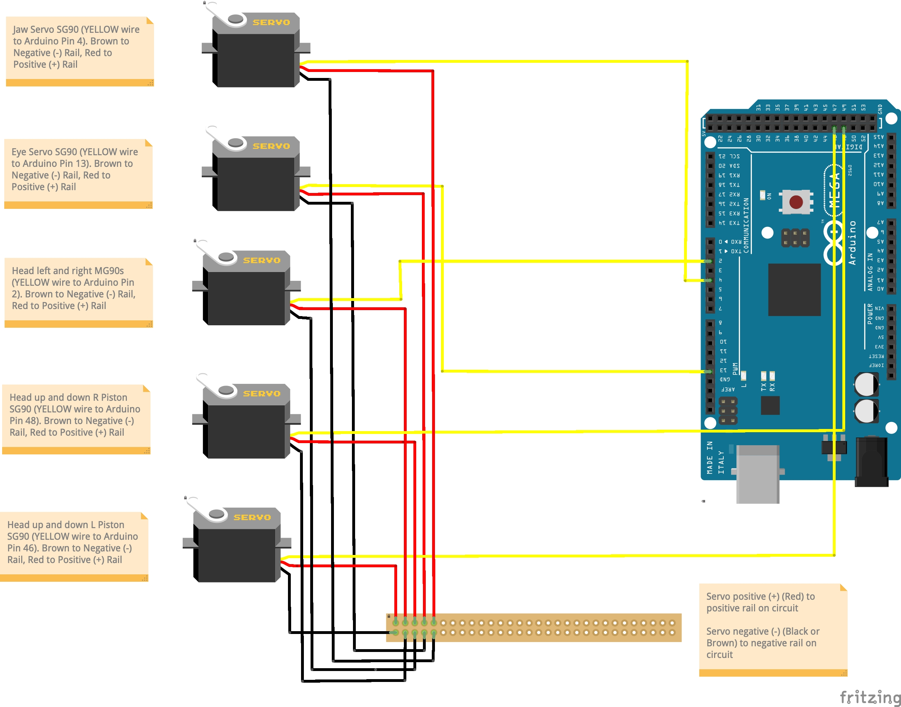

NOTE: I don't fit my pistons until the neck and body are attached to the T800.
You will have to remove the rear collar bone pistons at the back that attach to the shoulder.
Reattach them when you've fitted your modded pistons.
Dont overtighten the rear collar bone pistons as it will prevent movement.
Shoulders must be posed sqaure to allow the mechanisim to move.
Posed drooping shoulders forward or back will prevent range and in time no doubt burn out the gear and motor.
A 7/64 allen key required (not included in the kit). You can find here
Pistons will be painted silver.
T800 base Components Wiring Diagram
NOTE: Your kit comes 90% wired.
Just in case something works loose in transit you have this to refer to.
You will need to connect the base LEDS, eye LEDS to the Arduino and the Speaker to the MP3 as per above (Your kit comes with x5 sets of positive and ground extension cables).
No soldering is required on the kit at all.
T800 Servo Wiring Diagram

NOTE: Your kit comes with x5 made up sets of servo wires
RED (Positive) BLACK (Negative) and YELLOW (Signal connects to Arduino specificed pin above)
You will need to route these cables down the support poles.
A 8mm metal drill bit is required to drill the poles. Or you can cable tie to the support poles. It's up to you how you prefer to do it.